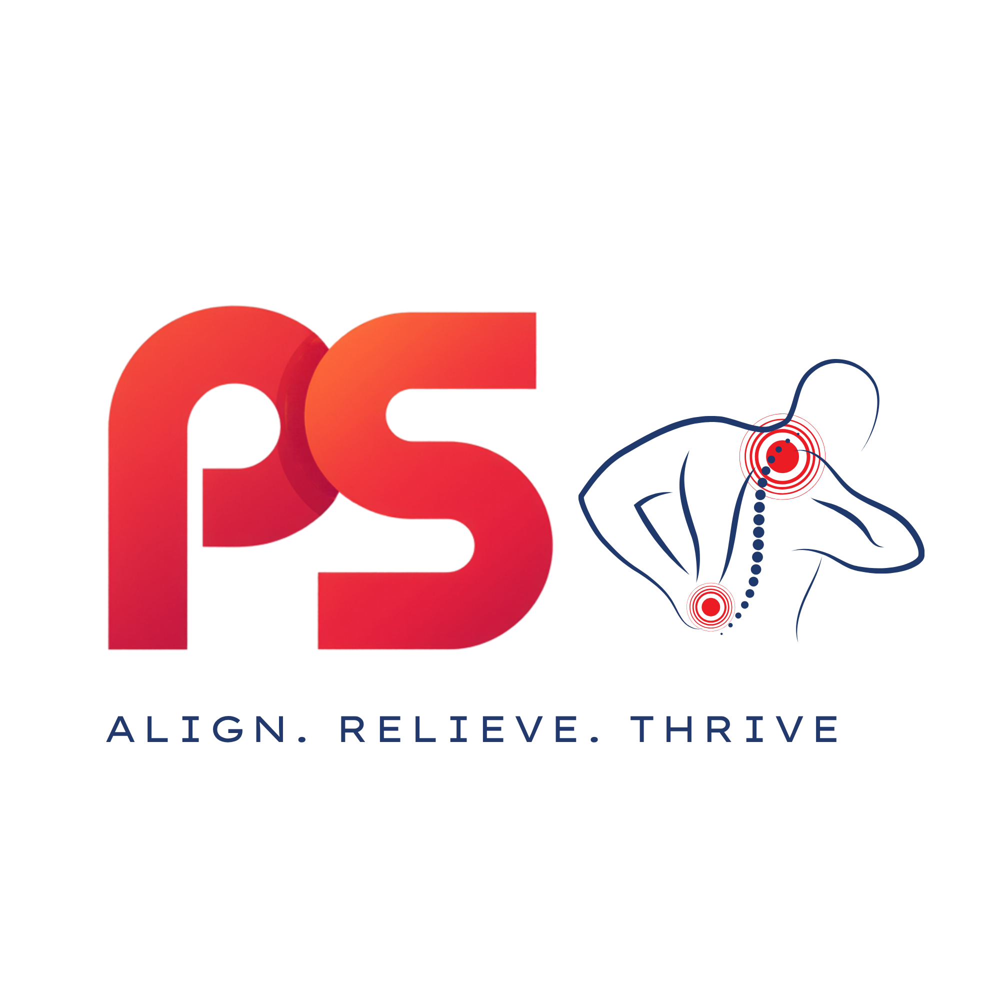

Doctor Interface
Pain Assessment
Taxonomy Explorer
العربية
Classification Reference
Reset
Clinician-driven selection.
Navigate the anatomical map and pain taxonomy manually — this interface does not detect, predict, score, or diagnose pain.
Front View
Back View
Click an anatomical region to begin
Cross-cutting pain systems
Pain Classification Reference
✕
No
Continue